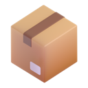
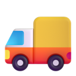

Em construção
Esta seção ainda está em construção. O Dashboard, os Pedidos, a Roteirização, as Rotas, os Motoristas e o Mapa já funcionam.
Receber pedidos automaticamentePor e-mail ou pelo sistema da sua empresa, sem subir arquivo
Toque num ponto para colocar na rota; toque de novo para tirar. Para ver o pedido inteiro (produtos, peso, volumes), segure o dedo no ponto; no computador, botão direito; no teclado, tecla V no ponto. Pedidos no mesmo endereço entram juntos, porque são a mesma parada. A linha pontilhada é o rascunho na ordem que você escolheu; quando você para de tocar, ela vira o caminho pelas ruas. Ponto vermelho: agendado para o dia da viagem.
Montagem no baú, em 3D
Pedidos pendentes
De onde vem o m³
Cada pedido tem o m³ de uma destas formas. O número diz quantos pedidos pendentes usam cada uma.
Medidas dos produtos
Produtos com medida
Fator de cubagem (frete)
Não muda a rota: é a regra de cobrança. Peso cubado = m³ × fator, e o frete costuma ser cobrado pelo maior entre o peso da balança e o cubado (o peso taxado). O sistema usa no peso taxado e no custo por cliente dos relatórios. No rodoviário o costume é 300 kg por m³, mas cada contrato pode ter o seu.
Novo acesso de demonstração
Para quem pediu "Ver o sistema". Começa com dados fictícios; se importar as próprias notas, elas ficam numa área só dela.
Pedidos de acesso
Quem entrou no sistema e ainda não foi liberado.
Acessos de demonstração
Dados fictícios. Ao vencer, a pessoa vê o aviso para falar com você.
Acesso completo
Cada cliente vê só os dados da própria empresa.
Centro de distribuição de cada empresa
De onde saem as rotas. Só você define; o cliente vê, mas não troca. Pelo CEP o ponto fica na rua; para o ponto exato, cole as coordenadas do Google Maps (toque e segure no mapa).
Tempo de viagem de cada empresa
O servidor de rotas calcula o tempo de viagem sem trânsito. Este número multiplica esse tempo nas rotas da empresa: 1 é sem ajuste, 1,2 é 20% mais devagar. A sugestão vem das baixas dos motoristas nos últimos 60 dias e só aparece com 20 trechos ou mais, em pelo menos 3 rotas.